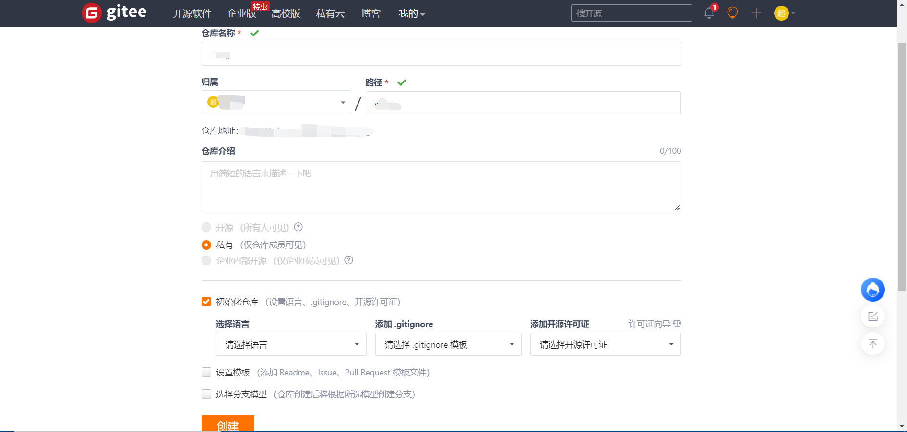
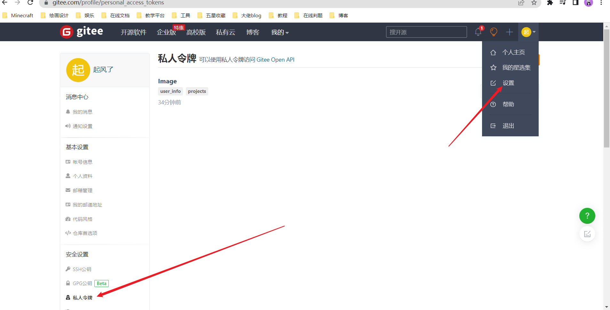
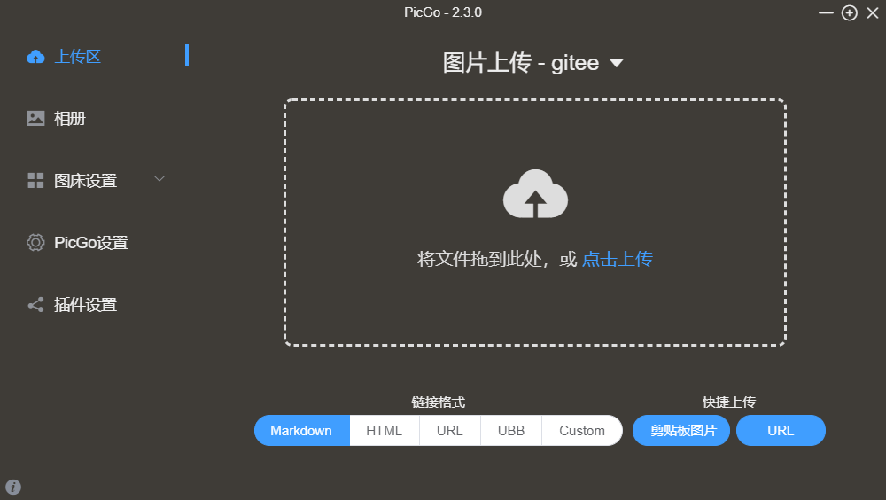
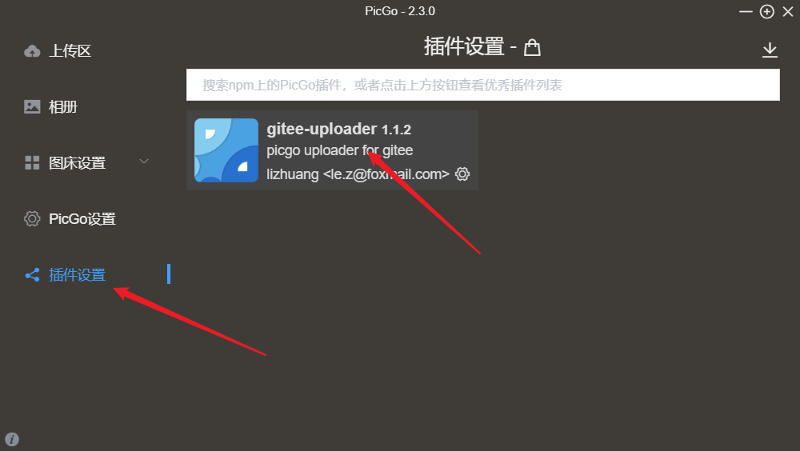
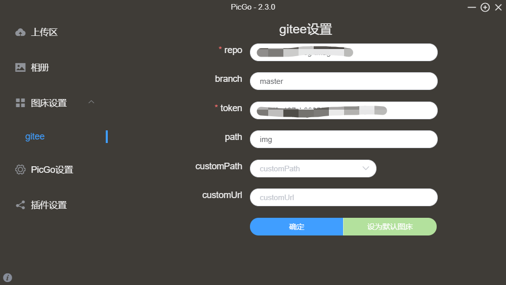
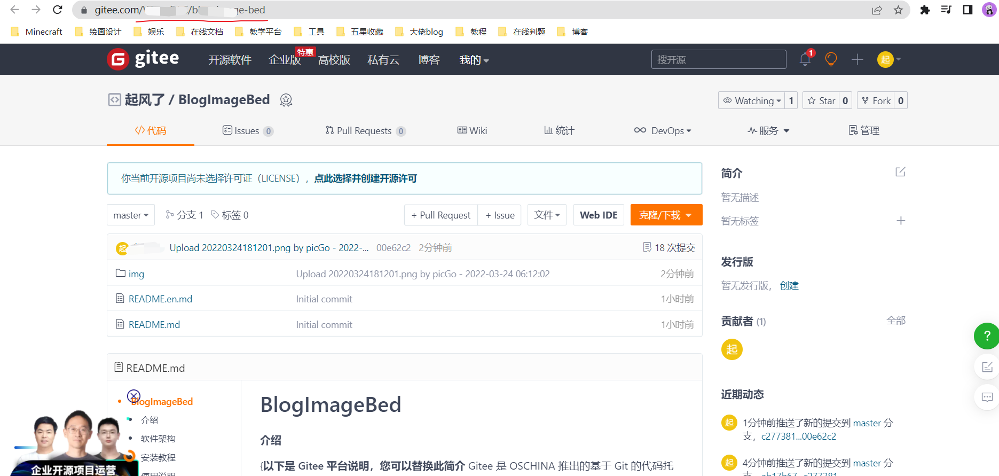

配置PicGo+Gitee图床教程
配置PicGo+Gitee图床教程(Gitee图床已失效)
引入
下午下课后在教室正漫无目的翻看大佬的帖子，不太理解“image bed”的含义，问了下度娘才恍然大悟，说白了就是专门存储图片的服务，又看到很多大佬写blog都配下图床，想想刚配好的blog，因为放在github的缘故，延迟感人，图片加载速度真是一言难尽。。于是利用Gitee也配置了自己的图床，并且已经完成图片迁移。
教程（注：顺序无所谓）
1.首先登录Gitee，新建一个存储image的库。

2.点击个人设置，新建私人令牌，把token存到电脑上

3.下载并安装PicGo，安装好打开是这样滴

4.下载如图插件（新版本不自带Gitee支持，需要下载插件）

5.打开图床设置，点击Gitee

1.repo设置
复制仓库链接上面划红线部分的，及”用户名+仓库名”

2.branch设置
直接填 master
3.token设置
就是你复制的私人密钥的token
4.path设置
一般填 img （注：其实就是你仓库存放图片的路径，没有的话他会自动创建）